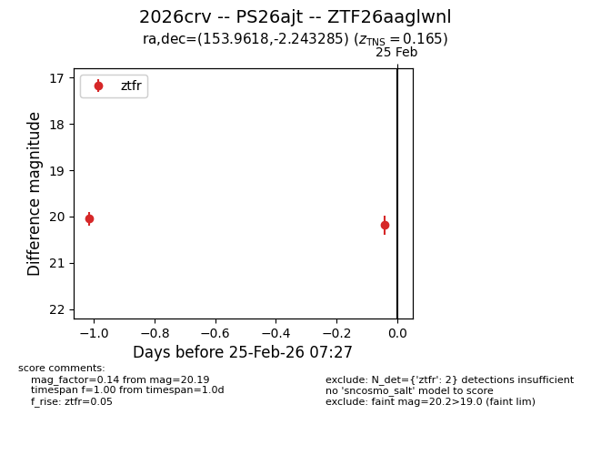
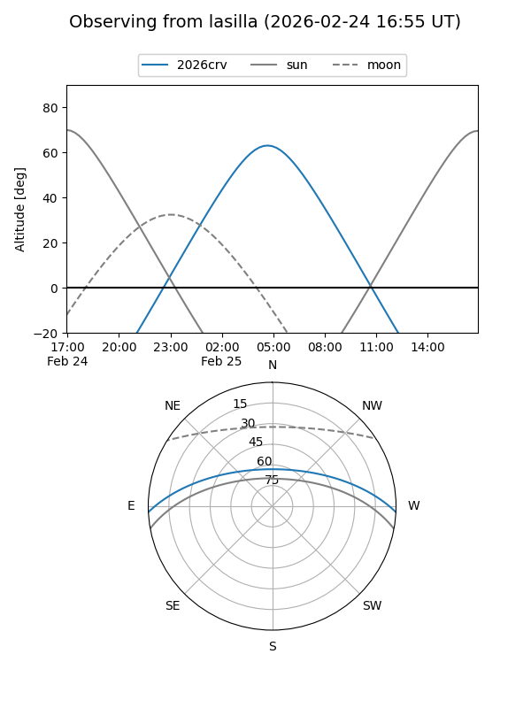
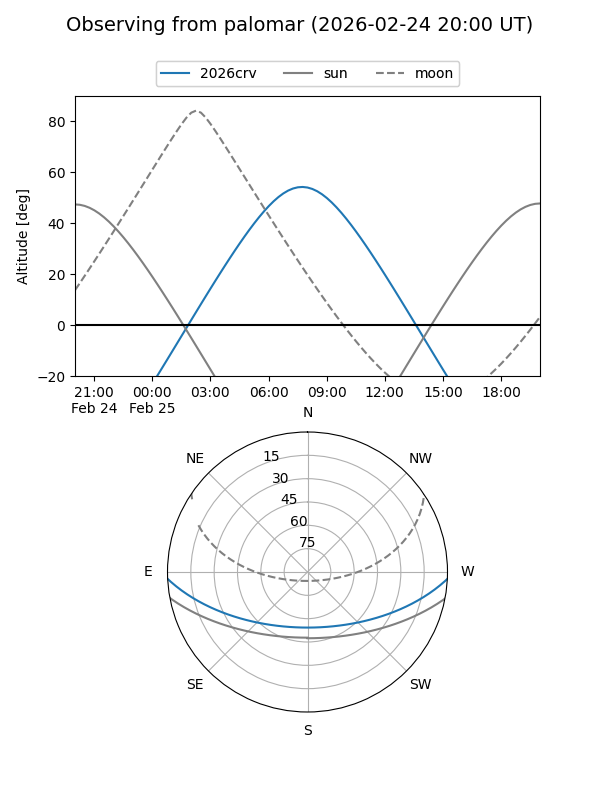

2026crv
Target 2026crv at 2026-02-25 07:28
Aliases and brokers:
FINK: link
Lasair: link
ALeRCE: link
TNS: link
YSE: link
alt names
ZTF26aaglwnl (ztf,fink_ztf)
2026crv (tns,yse)
PS26ajt (panstarrs)
Coordinates:
equatorial (ra, dec) = 153.9618,-2.24329
equatorial (HMS+DMS) = 10:15:50.84,-02:14:35.83
galactic (l, b) = (244.7588,+42.39754)
Flags:
confirmed ia
Photometry:
last ztfr=20.19
2 ztfr detections
Lightcurve

Visibility


Additional plots